using Pkg
Pkg.activate("..")
using Catlab, AlgebraicRewriting
using RewriteGames
using Random
using Statistics: mean
using Catlab.Graphics.Graphviz: Attributes, Statement, Node
import Catlab.Graphics.GraphvizTic-Tac-Toe Gameplay with RewriteGames
Setup
Overview
Reinforcement learning (RL) provides a powerful paradigm for discovering optimal strategies in games. However, RL is inherently data-hungry: it requires a game engine capable of generating millions of play examples. For games still under active development, building a bespoke, performant simulator from scratch is often a significant engineering barrier. If the rules or the board structure change next week, a simulator written in imperative code could require a total refactor.
RewriteGames.jl is designed to lower the barrier to training RL agents on games by providing a universal engine for game simulation. Instead of writing custom state-transition logic in imperative code, you define your game in terms of structured relational data. Game states are represented as in-memory relational databases with a fixed schema, and moves are defined as rewrite rules that perform pattern-matching and replacement on those structures. Any game whose state can be described as a relational structure — whether it involves boards, unit networks, or abstract graphs — can be simulated immediately. For games that share this common relational substrate, RewriteGames.jl’s engine’s bookkeeping (match enumeration, turn sequencing, serialization) applies uniformly.
Two longer-term goals shape the library’s design:
- Modular Game Evolution. Because the engine operates on relational data, games become “algebraic”: you can build a complex game by gluing together simpler ones. You might start with a simple grid-based board and later seamlessly add new types of pieces or network connections without throwing away your existing rules or schedules.
- Cross-Game Transfer. When games share a common relational representation, a policy trained on one game could, in principle, transfer to another with a similar structure. This is ongoing research.
In this tutorial, we use tic-tac-toe to provide a comprehensive introduction to the framework and its underlying theory. We will bridge the gap between game design and category theoretic methods that underpin RewriteGames.jl, introducing each concept—from data modelling to rewrite logic—exactly when we need it to build our game.
- Relational Modelling: We define the “schema” and instances of the board—its objects and the relationships between them—using Attributed C-Sets (ACSets).
- Move Logic: We define moves as structural changes using rewrite rules and pattern-matching (homomorphisms).
- Strategic Symmetry: We use Data Migrations to mechanically derive O’s logic from X’s, ensuring perfect symmetry while avoiding code duplication.
- Game Flow: We organize rules and win-checks into a complete, branching game loop using Wiring Diagrams.
- Learning: We train a policy that learns to play directly from the board’s relational structure using Graph Neural Networks.
Part 1 — Relational Modelling of the Board
To build a simulator for games under development, we need a data model that is both generic and well-behaved. Traditional imperative approaches often fix the board as a flat array or a custom struct, making it difficult to reason about structural changes or to reuse logic across different games.
Instead, we use relational modelling. A relational structure treats the game state as a collection of entities (objects) and the relationships (morphisms) between them. This approach is powerful because it admits a rigorous notion of “relationships between instances”, allowing us to find sub-patterns, compare states, and transform structures using a unified logic.
Schema design
Every relational model begins with a schema. The schema defines the “types” of things that can exist in our world and the “rules” for how they connect. For tic-tac-toe, we need to track squares, pieces, and the connectivity of the board:
| Object | Meaning |
|---|---|
Sq |
Board squares (always exactly 9) |
RowE |
Horizontal edges encoding row adjacency |
ColE |
Vertical edges encoding column adjacency |
DiagE |
Diagonal edges encoding diagonal adjacency |
X |
X pieces placed so far |
O |
O pieces placed so far |
Two foreign keys (xsq, osq) record which square each piece occupies. Each of the three edge tables has two foreign keys recording its source and target squares (rsrc/rtgt, csrc/ctgt, dsrc/dtgt), giving six edge-related foreign keys in total. As we will see later, separating rows, columns, and diagonals into distinct tables lets win-detection patterns repeat across orientations. Let’s look at how we implement this schema in RewriteGames.jl, or more accurately how RewriteGames.jl uses Catlab.jl and ACSets.jl to do so.
@present SchTTT(FreeSchema) begin
Sq::Ob; RowE::Ob; ColE::Ob; DiagE::Ob; X::Ob; O::Ob
xsq::Hom(X, Sq); osq::Hom(O, Sq)
rsrc::Hom(RowE, Sq); rtgt::Hom(RowE, Sq)
csrc::Hom(ColE, Sq); ctgt::Hom(ColE, Sq)
dsrc::Hom(DiagE, Sq); dtgt::Hom(DiagE, Sq)
SquareNum::AttrType
num::Attr(Sq, SquareNum)
end
@acset_type TicTacToe(SchTTT, index=[:xsq, :osq])
const TTT = TicTacToe{Int}
𝒞 = ACSetCategory(VarACSetCat(TTT()))
to_graphviz(SchTTT; prog="dot")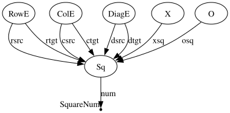
Formalizing the Instance: ACSets as Copresheaves
While the code above looks like a standard database declaration, it has a precise mathematical foundation that enables the “algebraic” nature of RewriteGames.jl.
A schema is formally a category \(\mathbf{C}\). A category consists of:
- A collection of objects (e.g.,
Sq,X,RowE,ColE,DiagE). - For each pair of objects \(c, d\), a collection of morphisms \(f: c \to d\) (e.g.,
xsq,rsrc,csrc,dsrc). - A composition law: given \(f: c \to d\) and \(g: d \to e\), there is a morphism \(g \circ f: c \to e\).
- An identity morphism \(id_c: c \to c\) for every object \(c\).
In our context, objects represent the tables of our relational model, and morphisms represent the foreign key relationships between them.
An instance of that schema (a specific board state) is a copresheaf: a functor \(I: \mathbf{C} \to \mathbf{Set}\).
- For each object \(c \in \mathbf{C}\), the functor assigns a set \(I(c)\) of elements (the rows in a table).
- For each morphism \(f: c \to d\) in \(\mathbf{C}\), the functor assigns a function \(I(f): I(c) \to I(d)\) (the foreign key mappings).
This is exactly what we call a C-Set. Strictly speaking, to handle attributes (like the square number num), we extend this definition to an “Attributed C-Set” (ACSet), which is more involved. For the remainder of this tutorial, however, we will elide this technical distinction and treat our game states simply as copresheaves.
By treating game states as functors, we gain access to the rich toolbox of category theory, including the ability to relate different states to one another. First, however, we’re going to make some Julia functions that construct an instance of our TicTacToe schema.
Board constructor and visualisation
Squares are numbered 1–9 in row-major order. Horizontal edges connect adjacent squares in the same row; vertical edges connect squares directly above/below each other.
function create_board()
ttt = TTT()
add_parts!(ttt, :Sq, 9; num=collect(1:9))
# Row edges (bidirectional)
for i in 0:2, j in 0:1
s, t = 3*i+j+1, 3*i+j+2
add_parts!(ttt, :RowE, 2, rsrc=[s, t], rtgt=[t, s])
end
# Column edges (bidirectional)
for i in 0:1, j in 0:2
s, t = 3*i+j+1, 3*i+j+1+3
add_parts!(ttt, :ColE, 2, csrc=[s, t], ctgt=[t, s])
end
# Diagonal edges (bidirectional)
# Main diagonal: 1-5, 5-9
for (s, t) in [(1,5), (5,9)]
add_parts!(ttt, :DiagE, 2, dsrc=[s, t], dtgt=[t, s])
end
# Anti-diagonal: 3-5, 5-7
for (s, t) in [(3,5), (5,7)]
add_parts!(ttt, :DiagE, 2, dsrc=[s, t], dtgt=[t, s])
end
return ttt
endTo understand this code in terms of our copresheaf definition:
TTT()initializes an empty instance—a functor \(I\) that maps every object in \(\mathbf{C}\) to the empty set.add_parts!(ttt, :Sq, 9)defines the set \(I(Sq)\) to be a set of 9 elements.add_parts!(ttt, :RowE, 2, rsrc=[s, t], rtgt=[t, s])adds elements to the set \(I(RowE)\) and defines where the functions \(I(rsrc)\) and \(I(rtgt)\) map those elements within the set \(I(Sq)\).
By the end of the constructor, we have a fully specified functor representing the initial state of a 3x3 tic-tac-toe board, with its row, column, and diagonal adjacency captured in distinct tables.
A small Graphviz helper renders any board state for quick inspection:
function view_TTT(p::TTT)
stmts = Statement[]
for s in parts(p, :Sq)
n = let v = subpart(p, s, :num); v isa Integer ? v : s end
row = div(n-1, 3)
col = mod(n-1, 3)
x, y = col, 2-row
label = ""
xs = incident(p, s, :xsq)
os = incident(p, s, :osq)
if !isempty(xs)
label = "X"
elseif !isempty(os)
label = "O"
end
push!(stmts, Node("v$s", Attributes(
:label => label,
:shape => "square",
:width => "0.5",
:height => "0.5",
:pos => "$(x),$(y)!",
:fixedsize => "true"
)))
end
Graphviz.Digraph("TTT", stmts; prog="neato")
end
view_TTT(create_board())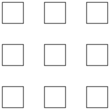
Relating Instances: Morphisms and Natural Transformations
The “killer feature” of using copresheaves is that there is a canonical way to define a map between two board states. A morphism (or homomorphism) \(h: I \to J\) between two ACSets is a natural transformation.
Formally, a natural transformation \(h: I \to J\) between two functors \(I, J: \mathbf{C} \to \mathbf{Set}\) is a family of functions \(\{h_c: I(c) \to J(c)\}_{c \in \mathbf{C}}\) (one for each object in our schema) such that for every morphism \(f: c \to d\) in \(\mathbf{C}\) (every foreign key), the following diagram commutes:
In plain English, this commutativity means that the mapping \(h\) preserves structure. If we map an element from one table to another, all of its relationships (foreign keys) must be preserved in the target instance.
Example: Mapping a Square to a Piece
Consider a simple homomorphism from a bare square to a square that contains an ‘X’. We can define these two instances and find the morphism between them:
# Define a bare square instance
bare_sq = TTT()
add_parts!(bare_sq, :Sq, 1; num=[1])
# Define a square with an X piece
sq_with_x = TTT()
add_parts!(sq_with_x, :Sq, 1; num=[1])
add_parts!(sq_with_x, :X, 1; xsq=[1])
# Find the structural mapping (homomorphism)
h = homomorphism(bare_sq, sq_with_x; cat=𝒞)
println("Homomorphism components:")
for (ob, func) in pairs(components(h))
# We only print components for objects with elements in the domain
if nparts(bare_sq, ob) > 0
println(" $ob: $([func(i) for i in 1:nparts(bare_sq, ob)])")
else
println(" $ob: []")
end
endHomomorphism components:
Sq: [1]
RowE: []
SquareNum: []
X: []
DiagE: []
ColE: []
O: []The component for Sq maps our single square in bare_sq to the single square in sq_with_x. Because bare_sq has no pieces, the components for X, O, and E are empty functions.
We can visualize the source and target of this morphism:
view_TTT(bare_sq)view_TTT(sq_with_x)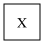
This structural consistency is what allows us to define “patterns.” Finding a winning line or checking if a square is empty is simply a matter of searching for a morphism from a small pattern ACSet into the large board ACSet. This leads us directly into the next portion of defining a game: using these morphisms to perform Rewrite Rules.
Part 2 — Rewrite Rules
Everything a player can do in a game — place a piece, move a unit, build a structure — is represented in RewriteGames.jl as an algebraic rewrite rule. Before we implement these rules, we need to understand the formal machinery that makes them work: Double Pushout (DPO) Rewriting.
The Anatomy of a Rule: Spans
A rewrite rule is defined by a span of ACSets \(L \leftarrow K \to R\). Each piece of this span has a specific semantic role:
- \(L\) (Left Pattern): The sub-structure that must be present in the world for the rule to fire. It defines what we are looking for.
- \(K\) (Interface): The part of the pattern that is preserved during the rewrite. It acts as the anchor that connects the old world to the new.
- \(R\) (Right Pattern): What the sub-structure looks like after the rewrite.
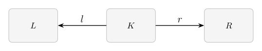
As a concrete illustration, consider the mark_x rule that places an X on an empty square:
- \(L = K\): A single bare Sq. The left leg \(l = id_{Sq}\) is an isomorphism, so nothing in the world is deleted — we are simply locating a square to mark.
- \(R\): The Sq-with-X representable. The right leg \(r: Sq \to X\) embeds the bare square into a structure that also holds an X piece, adding the piece to the matched square.
Figure 3 shows the same span with each ACSets replaced by its category of elements: every table row becomes a node and every foreign-key application becomes an edge. The color encoding reveals the action of the span morphisms — blue nodes appear in the image of \(l\) or \(r\) from \(K\), while the orange X node is freshly introduced by \(r\) with no preimage in \(K\).
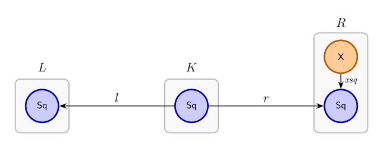
mark_x rule, with each ACSets shown as its category of elements. Blue nodes are preserved by the span morphisms from \(K\); the orange \(X\) node is newly introduced by \(r\).
Matching and the DPO Diagram
To apply a rule to our game board \(G\), we first find a match: a homomorphism \(m: L \to G\). This match identifies a specific location on the board where the pattern \(L\) exists.
The rewrite process is then governed by the following commutative diagram consisting of two pushout squares:
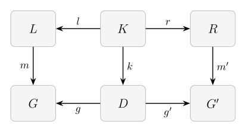
Each element of the diagram has a concrete role:
| Symbol | Role | For mark_x |
|---|---|---|
| \(L\) | Left pattern — the sub-structure to find | A single bare square |
| \(K\) | Interface — what is preserved | The same bare square |
| \(R\) | Right pattern — the replacement | A square with an X piece |
| \(G\) | Current world | The 3×3 board before the move |
| \(D\) | Pushout complement — the residual world | The board unchanged (nothing is deleted) |
| \(G'\) | New world | The board after the X is placed |
The morphisms stitch the objects together: \(l\) and \(r\) are the span legs; \(m: L \to G\) is the match (identifying where in \(G\) the pattern appears); \(k: K \to D\) tracks the preserved interface into the residual world; and \(g\), \(g'\), \(m'\) complete the two pushout squares.
Finding the Match
The first computational step is finding the match \(m: L \to G\) — a homomorphism from the left pattern into the current world.
Recall that a homomorphism is a structure-preserving map: it must send every table row of \(L\) to a row of the same table in \(G\), and it must respect every foreign key. If \(L\) records a row-edge from square \(a\) to square \(b\), then \(m(a)\) and \(m(b)\) must also be connected by a row-edge in \(G\).
For mark_x, \(L\) is a single bare square with no edges, so the only constraint is that the target is a square. Figure 5 shows one particular match \(m\): \(L\)’s Sq is sent to the center square of \(G\) (highlighted in bright blue). The eight remaining squares (light blue) are valid alternative targets — on an empty board any of the nine squares could serve as the match. Narrowing the candidate set to only empty squares is the job of Negative Application Conditions (NACs), described in the next section.
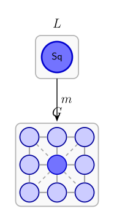
mark_x: \(L\)’s single Sq node maps to the center square of \(G\) (bright blue). The eight light squares are valid alternative targets on an empty board.
Negative Application Conditions
Finding all homomorphisms \(m: L \to G\) gives the raw candidate matches. A Negative Application Condition (NAC) prunes that set by declaring a match invalid whenever the matched sub-graph can be extended into a larger forbidden pattern.
Formally, a NAC is a morphism \(n: L \to N\). A match \(m: L \to G\) is rejected by this NAC if there exists any morphism \(q: N \to G\) that makes the triangle commute — that is, if \(q \circ n = m\).
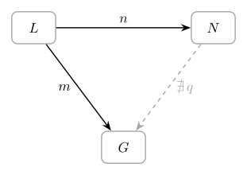
Think of it as a “forbidden extension”: the match is legal only when the matched sub-structure in \(G\) cannot be extended into the pattern \(N\).
For mark_x, we attach two NACs:
- “Not already an X”: \(n: Sq \to X\) — reject the match if the square already holds an X piece.
- “Not already an O”: \(n: Sq \to O\) — reject the match if the square already holds an O piece.
Together these ensure mark_x can only fire on a genuinely empty square, which is exactly the legality condition for a Tic-Tac-Toe move.
What is a Pushout?
Formally, a pushout of two morphisms \(l: K \to L\) and \(k: K \to D\) consists of an object \(G\) and two morphisms \(m: L \to G\) and \(g: D \to G\) such that \(m \circ l = g \circ k\).
Furthermore, it must satisfy the universal property: for any other object \(Q\) and morphisms \(h: L \to Q\) and \(j: D \to Q\) such that \(h \circ l = j \circ k\), there exists a unique morphism \(u: G \to Q\) such that \(u \circ m = h\) and \(u \circ g = j\).
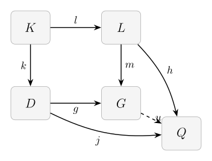
In the context of ACSets, this means taking the disjoint union of the elements in \(L\) and \(D\), and then identifying (merging) any elements that came from the same element in \(K\).
Intuition: The “Minimal” Glue
The universal property might look abstract, but it provides a critical guarantee: it ensures that the pushout is the minimal object that combines \(L\) and \(D\) along \(K\).
- No extra elements: The property ensures we haven’t added any “ghost” squares or pieces that weren’t in \(L\) or \(D\).
- No unnecessary merges: It ensures we haven’t “squashed” any distinct parts of the board together unless they were explicitly linked by the interface \(K\).
In short, the universal property is our algebraic guarantee that the rewrite performs exactly the specified replacement and nothing more.
Computing the Pushout Complement
With the pushout defined, we can now describe the first computational step of a DPO rewrite: finding the pushout complement \(D\).
Given the match \(m: L \to G\) and the left leg \(l: K \to L\), the pushout complement is the unique ACSets \(D\) — together with morphisms \(k: K \to D\) and \(g: D \to G\) — such that the left square of the DPO diagram is a pushout. Intuitively, \(D\) is \(G\) with the elements that were matched by \(L\) but are not in the interface \(K\) removed. It is the “residual world” that persists through the rewrite.
Figure 8 shows this setup for the mark_x rule on an empty board. \(G\) (bottom-left) is the full 3×3 board: nine Sq nodes connected by row, column, and diagonal adjacency edges. The darker blue square is the one targeted by the match \(m\). Because \(l: K \to L\) is an isomorphism for this rule — nothing is deleted — the pushout complement \(D\) (bottom-right, dashed border) is identical to \(G\). The key morphism \(k: K \to D\) embeds the interface square into \(D\) at the same position selected by the match.
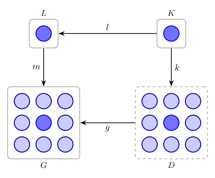
mark_x rule on an empty board. \(L\) and \(K\) each contain a single square. \(G\) is the full empty board (its category of elements shown as a grid; darker node = matched square). \(D\) is the pushout complement — structurally identical to \(G\) here since no elements are deleted.
The DPO Rewrite Process
We are now ready to understand a full DPO rewrite step.
- Game Design (The Span): The designer defines a span \(L \leftarrow K \to R\). This is a static declaration of what a move looks like in principle.
- Match Search (Finding \(m\)): During gameplay, the engine searches for homomorphisms \(m: L \to G\). These represent the legal “spots” on the current board where the rule could be applied.
- Pushout Complement (Finding \(D\)): Once a match is chosen, the engine computes \(D\) as described above — the board with the matched-but-not-preserved elements removed.
- The Result (The RHS Pushout \(G'\)): The engine computes a second pushout, gluing the new pattern \(R\) onto \(D\) along the shared interface \(K\). This produces the updated world \(G'\).
Figure 9 shows the complete DPO rewrite for the mark_x rule applied to the center square of an empty board. Each object is its category of elements: blue circles are Sq nodes (bright = in the image of a morphism from \(K\); light = elsewhere on the board), and the orange circle is the new X piece glued in by the right pushout. Gray lines are board topology edges (RowE, ColE, DiagE).
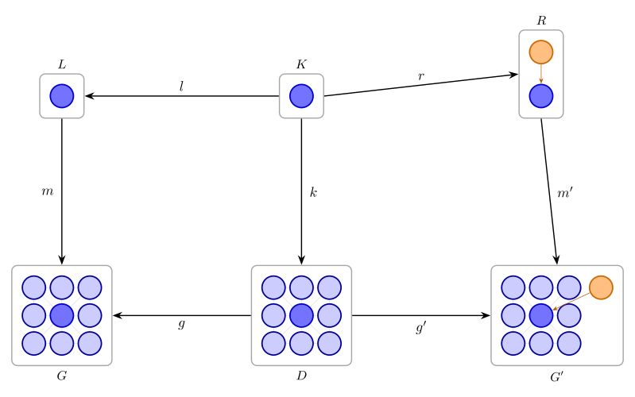
mark_x. Top: the span \(L \xleftarrow{l} K \xrightarrow{r} R\). Bottom: match \(m\) sends \(L\)’s square to the center of board \(G\); the pushout complement \(D\) is identical to \(G\) (nothing deleted); the right pushout glues \(R\)’s X piece onto \(D\) at the interface square to produce \(G'\).
By using this formal approach, RewriteGames.jl ensures that all state transitions are structurally consistent. Defining the game rules as rewrite rules means that agents can only ever take legal actions that are available given the state of the board. The algebraic machinery handles the “logic” of the physical board automatically.
Theory to Practice: Building X’s Rules
For our TicTacToe game, we will build X’s rules first. Once those are in place, the Strategic Symmetry section shows how a single migration functor derives O’s entire ruleset — including move rules, win-detection rules, and schedule structure — without writing any additional rule code. Another advantage of algebraic modeling!
Before we write rules, it will be convenient to have the Yoneda representables and the Names object that AlgebraicRewriting uses to construct and label morphisms:
gSq, gRE, gCE, gDE, gX, gO = ob_generators(FinCat(SchTTT))
yTTT = yoneda_cache(TTT; clear=true)
I = TTT() # the empty ACSet (initial object)
Sq = ob_map(yTTT, gSq)
RowE = ob_map(yTTT, gRE)
ColE = ob_map(yTTT, gCE)
DiagE = ob_map(yTTT, gDE)
X = ob_map(yTTT, gX)
O = ob_map(yTTT, gO)
N = Names(Dict("X" => X, "O" => O, "Sq" => Sq, "" => I, "I" => I))The representable for each schema object is the unique (up to isomorphism) ACSet with exactly one element of that type, plus the minimum number of elements of every other type required to satisfy the foreign-key constraints. Think of it as the “atom” for that type.
| Variable | Object | Sq |
RowE |
ColE |
DiagE |
X |
O |
Description |
|---|---|---|---|---|---|---|---|---|
Sq |
Sq |
1 | 0 | 0 | 0 | 0 | 0 | A single bare square |
RowE |
RowE |
2 | 1 | 0 | 0 | 0 | 0 | Two squares joined by one row edge |
ColE |
ColE |
2 | 0 | 1 | 0 | 0 | 0 | Two squares joined by one column edge |
DiagE |
DiagE |
2 | 0 | 0 | 1 | 0 | 0 | Two squares joined by one diagonal edge |
X |
X |
1 | 0 | 0 | 0 | 1 | 0 | One X piece on one square |
O |
O |
1 | 0 | 0 | 0 | 0 | 1 | One O piece on one square |
The representables for X and O look like single-square boards with a piece already placed:
view_TTT(X) # representable for X: one square with an X piece
view_TTT(O) # representable for O: one square with an O piece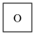
yoneda_cache computes all representables once and caches them. Names maps human-readable strings to representables; mk_sched and view_sched use it to label wires in the wiring diagram.
The mark_x rule
With the theory in place, the implementation is direct. L = K is the bare square representable Sq; the left leg is the identity (nothing deleted) and the right leg embeds Sq into X (adding the piece). The two NACs block firing on already-occupied squares.
view_TTT(Sq) # L = K
view_TTT(X) # R
id_Sq = id[𝒞](Sq)
mark_X_l = id_Sq
mark_X_r = homomorphism(Sq, X; cat=𝒞)
mark_x = Rule(mark_X_l, mark_X_r; monic=true,
ac=[NAC(homomorphism(Sq, X; cat=𝒞)),
NAC(homomorphism(Sq, O; cat=𝒞))])Strategic Symmetry: From X to O
We have now defined the fundamental move for the X player. Because we have modelled our game as a relational structure on a schema, we can take advantage of the inherent symmetry of tic-tac-toe. The rules for O are structurally identical to the rules for X; they simply operate on different tables.
The X ↔︎ O symmetry
Tic-tac-toe is symmetric between X and O in everything except turn order. Both players have the same move type (mark an empty square), and both have the same win condition (three in a row). Any rule built for X can be mechanically converted to its O counterpart by swapping every occurrence of X for O, xsq for osq, and vice versa.
Doing this swap by hand is tedious and error-prone. AlgebraicJulia provides a better tool: the Data Migration.
The Migrate functor in AlgebraicJulia
A Data Migration encodes a schema morphism as a Julia object that can be applied to any ACSet instance, ACSet morphism, or even an entire rewrite rule. Formally, this is the pullback migration (often denoted \(\Delta_F\)) developed by David Spivak in the context of functorial data migration.
Given a functor \(F: \mathbf{S} \to \mathbf{T}\) between two schemas (viewed as categories), the migration functor \(\Delta_F: \mathbf{Set}^\mathbf{T} \to \mathbf{Set}^\mathbf{S}\) is defined by precomposition. If \(X: \mathbf{T} \to \mathbf{Set}\) is an instance of schema \(\mathbf{T}\), then its migrated instance \(\Delta_F(X)\) is the composite functor:
\[\Delta_F(X) = X \circ F\]
Concretely, this means: - On Elements: The set of elements for an object \(s \in \mathbf{S}\) in the new instance is simply the set of elements of \(F(s)\) in the original instance: \((\Delta_F(X))(s) = X(F(s))\). - On Relationships: For any morphism \(f: s \to s'\) in \(\mathbf{S}\), the new mapping is the original mapping of its image under \(F\): \((\Delta_F(X))(f) = X(F(f))\).
In our case, both the source and target schema are SchTTT, but we define a non-trivial self-map of the schema that swaps \(X \leftrightarrow O\) and \(xsq \leftrightarrow osq\) while leaving the board topology (\(Sq\), \(E\), \(src\), \(tgt\)) unchanged. By applying \(\Delta_F\), we effectively “rename” the tables and columns of our board according to the symmetry we defined.
F = Migrate(
𝒞,
Dict(:X => :O, :O => :X, :Sq => :Sq, :RowE => :RowE, :ColE => :ColE, :DiagE => :DiagE, :SquareNum => :SquareNum),
Dict(:xsq => :osq, :osq => :xsq, :rsrc => :rsrc, :rtgt => :rtgt, :csrc => :csrc, :ctgt => :ctgt, :dsrc => :dsrc, :dtgt => :dtgt, :num => :num),
SchTTT, TTT)The first Dict maps objects (tables) and the second maps morphisms (foreign keys). Once F is built, you can apply it to:
- ACSet instances:
F(board)returns a new board with all X pieces turned into O pieces and vice versa. - ACSet morphisms:
F(h)pushes a homomorphism forward through the schema map. - Rules:
F(rule)migrates the left pattern, the right pattern, the interface, and every application condition (NAC) of the rule.
This single functor definition is all we need to derive O’s entire ruleset from X’s without repeating any code. We will see this in action once we organize our rules into a schedule.
Win-detection rules
Now that we have a strategy for handling player-specific moves, we need to think about the neutral rules of the game—those that don’t represent a player’s choice but rather the “physics” or “logic” of the game itself. The most important of these is win detection.
Rather than enumerating all eight winning lines explicitly, we describe a single winning configuration structurally: three squares connected by two successive row edges. We then use Data Migrations to derive the column and diagonal win conditions for free.
# Base pattern: three squares connected by row edges, all marked X
row_structural = TTT()
add_parts!(row_structural, :SquareNum, 3)
add_parts!(row_structural, :Sq, 3; num=AttrVar.(1:3))
add_parts!(row_structural, :RowE, 2, rsrc=[1,2], rtgt=[2,3])
for i in 1:3; add_part!(row_structural, :X, xsq=i); end
# Define migrations to swap RowE with ColE and DiagE
F_row2col = Migrate(𝒞,
Dict(:X=>:X, :O=>:O, :Sq=>:Sq, :RowE=>:ColE, :ColE=>:RowE, :DiagE=>:DiagE, :SquareNum=>:SquareNum),
Dict(:xsq=>:xsq, :osq=>:osq, :rsrc=>:csrc, :rtgt=>:ctgt, :csrc=>:rsrc, :ctgt=>:rtgt, :dsrc=>:dsrc, :dtgt=>:dtgt, :num=>:num),
SchTTT, TTT)
F_row2diag = Migrate(𝒞,
Dict(:X=>:X, :O=>:O, :Sq=>:Sq, :RowE=>:DiagE, :DiagE=>:RowE, :ColE=>:ColE, :SquareNum=>:SquareNum),
Dict(:xsq=>:xsq, :osq=>:osq, :rsrc=>:dsrc, :rtgt=>:dtgt, :dsrc=>:rsrc, :dtgt=>:rtgt, :csrc=>:csrc, :ctgt=>:ctgt, :num=>:num),
SchTTT, TTT)Each pattern becomes a no-op rule; injective (monic=true) matching ensures distinct pattern squares always map to distinct board squares, preventing spurious wins.
x_rows_rule = Rule(id[𝒞](row_structural), id[𝒞](row_structural); monic=true)
# Derive other win rules via migration!
x_cols_rule = F_row2col(x_rows_rule)
x_diags_rule = F_row2diag(x_rows_rule)
x_rows_app = RuleApp(:x_wins_rows, x_rows_rule, I; cat=𝒞)
x_cols_app = RuleApp(:x_wins_cols, x_cols_rule, I; cat=𝒞)
x_diags_app = RuleApp(:x_wins_diags, x_diags_rule, I; cat=𝒞)Taking Stock: From Rules to Gameplay
We have now implemented everything we need to describe the logic of tic-tac-toe:
- X’s moves: Defined as rewrite rules with NACs.
- O’s moves: Derived via the
Migratefunctor. - Win conditions: Defined as structural patterns (no-op rules).
However, we are still missing the flow of the game. We haven’t yet specified whose turn it is, what happens after a move is made, or when the game should officially stop. For this, we need to arrange our rules into a schedule.
Part 3 — Building the Schedules
With moves defined as rewrite rules, the next step is to arrange them into a schedule: a wiring diagram that specifies whose turn it is, what happens when a win condition is met, and how play loops from round to round. A schedule is itself a composable object — sub-schedules for individual players can be defined independently and then wired together into a full game loop.
Two RewriteGames primitives build on AlgebraicRewriting’s scheduling machinery:
PlayerRuleAppwraps aRuleand tags it with a player identity. When execution reaches this box the engine asks the player to choose a move rather than applying one automatically.GameSchedis a schedule with extra bookkeeping: it tracks which boxes belong to which player and retains enough information to rebuild the schedule after a schema migration.
RuleApp and its two output ports
Before introducing PlayerRuleApp, it helps to understand the simpler primitive it extends: RuleApp.
A RuleApp wraps a Rule into a schedulable box. When execution reaches a RuleApp the engine applies the rule automatically — it finds a match on its own (or signals failure when none exists) — without consulting any player or agent. This makes RuleApp appropriate for mechanical checks such as win detection, where there is no decision to be made.
The key property of every RuleApp (and PlayerRuleApp) is two output ports:
- Port 1 (success): carries the rewritten world when a match was found and the rule applied.
- Port 2 (failure): carries the original world unchanged when no match existed.
This two-port structure lets schedules branch based on whether a rule could fire — which is exactly what we need for win detection and tie detection.
PlayerRuleApp — tagging a rule with a player
PlayerRuleApp extends RuleApp by tagging the rule with a player identity:
mark_x_app = PlayerRuleApp(:mark_x, mark_x, I, :X; cat=𝒞)Arguments: - :mark_x — the display name used by view_sched and stored in Action records. - mark_x — the AlgebraicRewriting Rule. - I — the interface ACSet (same role as the third argument to RuleApp). - :X — the player key; must match a key in the agents dict passed to run_game_sched!.
The :X tag is the player key that links this box to a concrete agent at runtime. When you call run_game_sched!, you pass an agents dictionary mapping player keys to AbstractAgent values — for example Dict(:X => FunctionAgent(...), :O => FunctionAgent(...)). Every PlayerRuleApp consults that dictionary to find the right agent for its player key. We will see exactly how to construct and register agents in Part 4.
When run_game_sched! reaches a PlayerRuleApp box, it enumerates all valid matches (legal moves), presents them to the registered agent, applies the chosen match, and records an Experience capturing the board before and after the move.
Like a plain RuleApp, a PlayerRuleApp has two output ports: success (a move was made) and failure (no legal moves exist). If no matches exist (board full), the box routes to its failure port, signalling a tie.
Agents can also pass voluntarily: returning nothing from select_action when matches are available routes to the same failure port with the world left unchanged, and records action = nothing in the Experience. The transcript loop below uses exactly this check (exp.action !== nothing) to distinguish a real move from a pass or no-match turn.
The sub-schedules below are built with mk_game_sched. Read each code block as a dataflow program: every assignment out1, out2 = box(in) runs box on whatever board is currently flowing along wire in and routes the result to out1 (success) or out2 (failure). A full reference for mk_game_sched and its DSL appears in the next subsection, after you have seen all three component schedules.
Win-check sub-schedules
x_won_check_gs succeeds (port 1) when X has three in a row, fails (port 2) otherwise. It uses only plain RuleApp boxes — no player decisions — so execution is deterministic. The three orientations (rows, columns, diagonals) are tested in cascade; two merge_wires boxes collect the three success paths into a single won exit wire.
x_won_check_gs = mk_game_sched((;), (init=:I,), N,
(r=x_rows_app, c=x_cols_app, d=x_diags_app, mw=merge_wires(I)),
quote
won_r, not_r = r(init)
won_c, not_c = c(not_r)
won_d, not_d = d(not_c)
won_rc = mw(won_r, won_c)
won = mw(won_rc, won_d)
return won, not_d
end)view_sched(x_won_check_gs; names=N)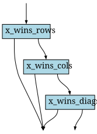
X’s turn schedule
mark_x_app is a PlayerRuleApp tagged :X. Port 1 fires after a successful mark; port 2 fires if no empty square exists (tie). Win detection is handled separately by the outer game loop, so this sub-schedule has only two return wires.
mark_x_app = PlayerRuleApp(:mark_x, mark_x, I, :X; cat=𝒞)
X_sched_gs = mk_game_sched((;), (init=:I,), N,
(mx=mark_x_app,),
quote
moved, tie = mx(init)
return moved, tie
end)view_sched(X_sched_gs; names=N)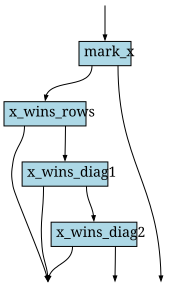
The schedule has two return wires:
moved— X placed a piece; pass the updated board to the win check.tie— board was full when X tried to move; exit as draw.
Migrating to O’s schedule with player_migrate
player_migrate applies the schema functor F to every box in a GameSched and remaps player identities:
player_migrate(F, gs::GameSched, player_map::Dict{Symbol,Symbol}) -> GameSchedIt traverses all boxes recursively:
PlayerRuleApp: the rule and interface are migrated (F(v.rule),F(v.init)), the player key is remapped, and the display name is updated via the optionalname_mapkeyword argument.GameSched: migrated recursively.- Other boxes (
RuleApp,merge_wires): migrated viaF(box).
The rebuilt schedule has the same wiring topology but with all X patterns swapped for O patterns throughout.
O_sched_gs = player_migrate(F, X_sched_gs, Dict(:X => :O); name_map=Dict(:mark_x => :mark_o))view_sched(O_sched_gs; names=N)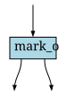
The name_map argument renames the :mark_x box to :mark_o in the migrated schedule. The functional difference is entirely in the rules: the mark rule’s right-hand side now adds an O piece, and the PlayerRuleApp player tag has been updated from :X to :O.
We also derive O’s win-check sub-schedule via the same migration:
o_won_check_gs = player_migrate(F, x_won_check_gs, Dict(:X => :O);
name_map=Dict(:x_wins_rows => :o_wins_rows, :x_wins_cols => :o_wins_cols, :x_wins_diags => :o_wins_diags))GameSched and mk_game_sched — the scheduling DSL
Now that you have seen three concrete schedules, it is easier to understand the primitives that build them.
Wires and boxes
Think of a schedule as a wiring diagram: named wires carry a board (an ACSet) from one box to the next. At any moment exactly one wire is active (carrying a board); all others are nothing. A box receives the board on its input wire, does something with it, and routes the result to one of its output wires:
- A
RuleAppbox fires its rule automatically and routes to port 1 (success) or port 2 (no match found). - A
PlayerRuleAppbox pauses, asks its agent to pick a move, applies it, and routes to port 1 (moved) or port 2 (no legal moves — tie). - A
merge_wiresbox forwards the first active (non-nothing) input wire and discards the rest — a convenient fan-in node.
Loops and the trace_arg
A schedule can loop by declaring trace wires: return wires that feed back into the start of the next iteration. The first length(trace_args) wires in the return statement are loop-back wires; any remaining wires are exit wires that terminate the schedule.
For example, game_sched declares (trace_arg=:I,) as its trace wire and (init=:I,) as its one-time initialisation wire:
- On the first iteration,
[init, trace_arg]routesinit(the freshly created board) into X’s turn, becausetrace_argis stillnothing. - On subsequent iterations, the board returned on
o_contfeeds back astrace_arg, whileinitis nownothing.
This pattern — [init, trace_arg] as the input — is the standard idiom for turning a straight-line schedule into a game loop.
Full API
mk_game_sched(trace_args, init_args, N, boxes, body) -> GameSchedtrace_args—NamedTupleofSymbol => wire_typepairs for loop-back wires.init_args—NamedTuplefor wires that are only active on the first iteration.N— theNamesobject mapping wire-type labels to representable ACSets.boxes—NamedTupleof schedulable boxes (PlayerRuleApp,GameSched,RuleApp,merge_wires(I), …).body— aquoteblock in the wire-assignment DSL:
quote
out1, out2 = box_name(in_wire) # route a single active wire into a box
merged = merge_box(out1, out3) # merge_wires: forward the first active wire
out3, out4 = box2([wire_a, wire_b]) # [wa, wb]: first active wire enters box
return trace_wire, exit_wire # first length(trace_args) wires loop back
endview_sched(gs; names=N) renders any GameSched as a Graphviz wiring diagram.
Full game loop
The outer schedule loops X then O, interleaving each player’s move with the corresponding win-check sub-schedule. If a win check succeeds, the world exits on a player-specific wire (x_won or o_won). If a player has no legal moves the board exits on the tie wire. Otherwise o_cont feeds back for the next round.
game_sched = mk_game_sched(
(trace_arg=:I,),
(init=:I,),
N,
(x=X_sched_gs, o=O_sched_gs, cx=x_won_check_gs, co=o_won_check_gs, mw=merge_wires(I)),
quote
x_moved, x_tie = x([init, trace_arg])
x_won, x_cont = cx(x_moved)
o_moved, o_tie = o(x_cont)
o_won, o_cont = co(o_moved)
tie = mw(x_tie, o_tie)
return o_cont, x_won, o_won, tie
end)view_sched(game_sched; names=N)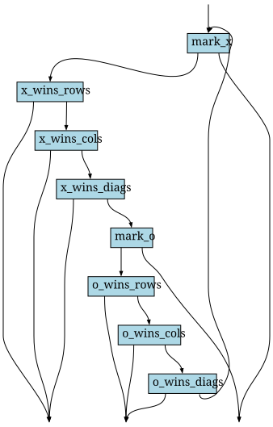
Return wires:
o_cont— trace wire; fed back at the start of the next round.x_won— X has three in a row; game ends, X wins.o_won— O has three in a row; game ends, O wins.tie— neither player could move; game ends as a draw.
Part 4 — Running the Game
With the schedule built, we have a complete description of how tic-tac-toe works, but we still need to say who plays. This section connects the three remaining pieces:
Game— a lightweight metadata record that tells the runner which players participate, how to create a fresh board, and which exit wires count as wins, losses, or draws.- Agents — Julia callables (wrapped in
FunctionAgentor a customAbstractAgentsubtype) that decide which move to make when the runner asks. run_game_sched!— the main loop that drives the schedule, asks agents for moves, and collects anExperiencerecord for every player turn.
Once these are in place, running a single game is a one-liner, and collecting thousands of episodes for training or statistics is a simple loop.
Game metadata record
Game is a lightweight struct that bundles the metadata describing a game:
struct Game
players :: Vector{Symbol}
initial :: Function # () -> ACSet
schema :: Any # schema presentation (optional)
win_conditions :: Union{Dict{Symbol,Any}, Nothing}
endplayersdeclares who participates and in what order.initialis a zero-argument factory called once per episode to produce a fresh world ACSet. Keeping it as a callable (rather than a single ACSet) ensures episodes are truly independent.schemais optional metadata used byGameMigration.win_conditionsmaps exit wire names to winner identities, resolving the winner from the active exit wire when the schedule terminates. Usenothingfor draw wires.
FunctionAgent — the simplest agent type
FunctionAgent((state, actions) -> rand(actions))A FunctionAgent wraps any Julia function with signature (EncodedState, Vector{Action}) -> Action into an AbstractAgent. It is the workhorse for random baselines and hand-coded heuristics.
run_game_sched! and Experience
run_game_sched!(gs::GameSched, game::Game, agents::Dict; T_max=1000)
-> Vector{Experience}The runner calls game.initial() to create the starting world, then drives the schedule until it exits. Every PlayerRuleApp execution emits one Experience:
struct Experience
player :: Symbol
state :: GameState # world before the move
legal_actions :: Vector{Action}
action :: Union{Action, Nothing} # nothing = no legal moves (tie)
next_state :: GameState # world after the move
done :: Bool
winner :: Union{Symbol, Nothing}
info :: Dict{Symbol, Any}
endWin conditions and game record
Rather than a Julia callback, the game’s termination logic is now expressed entirely by the exit wires in game_sched. We only need to tell run_game_sched! which player each exit wire belongs to via win_conditions:
game = Game(SchTTT;
players = [:X, :O],
initial = create_board,
win_conditions = Dict{Symbol, Any}(:x_won => :X, :o_won => :O, :tie => nothing))Random.seed!(42)
agents = Dict{Symbol, AbstractAgent}(
:X => FunctionAgent((state, actions) -> rand(actions)),
:O => FunctionAgent((state, actions) -> rand(actions)),
)Single episode and final board state
Random.seed!(42)
exps = run_game_sched!(game_sched, game, agents; T_max=20)
println("Episode length : ", episode_length(exps))
println("Winner : ", isempty(exps) ? "N/A" : something(exps[end].winner, "draw"))
println("Done flag : ", isempty(exps) ? false : exps[end].done)Episode length : 7
Winner : X
Done flag : trueAfter the episode, exps[end].next_state.world holds the final board ACSet:
final_board = exps[end].next_state.world
view_TTT(final_board)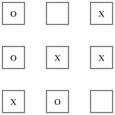
Note: Each square carries a stable :num attribute (1–9) set at board creation and never modified by any rewrite rule. The transcript below reads this attribute to display the square number chosen by each player.
Each Experience in exps records which player moved, which square was chosen (via the match morphism), and whether the episode ended:
for (i, exp) in enumerate(exps)
if exp.action !== nothing
# Get the square index by applying the Sq component of the match morphism
# to its first (and only) element.
sq_idx = components(exp.action.match)[:Sq](1)
sq = subpart(exp.state.world, sq_idx, :num)
println("Turn $i: $(exp.player) → square $sq (done=$(exp.done), winner=$(exp.winner))")
else
println("Turn $i: $(exp.player) passed (done=$(exp.done), winner=$(exp.winner))")
end
endTurn 1: X → square 6 (done=false, winner=nothing)
Turn 2: O → square 4 (done=false, winner=nothing)
Turn 3: X → square 5 (done=false, winner=nothing)
Turn 4: O → square 8 (done=false, winner=nothing)
Turn 5: X → square 7 (done=false, winner=nothing)
Turn 6: O → square 1 (done=false, winner=nothing)
Turn 7: X → square 3 (done=true, winner=X)Statistics over many episodes
all_exps = [run_game_sched!(game_sched, game, agents; T_max=20) for _ in 1:200]
x_wins = count(e -> !isempty(e) && e[end].winner === :X, all_exps)
o_wins = count(e -> !isempty(e) && e[end].winner === :O, all_exps)
draws = count(e -> !isempty(e) && e[end].winner === nothing && e[end].done, all_exps)
lengths = [episode_length(e) for e in all_exps]
println("X wins : $x_wins / 200 ($(round(100x_wins/200; digits=1))%)")
println("O wins : $o_wins / 200 ($(round(100o_wins/200; digits=1))%)")
println("Draws : $draws / 200")
println("Mean episode length : ", round(mean(lengths); digits=2))X goes first, so it has an advantage under purely random play — expect roughly 60–70 % for X, 25–30 % for O, and ~7 % draws.
Part 5 — Learning to Play via Self-Play Reinforcement Learning
The previous section showed that under pure random play X wins roughly 60–70 % of games. This section trains a graph neural network (GNN) policy that learns to play better than random purely through self-play, using the REINFORCE policy-gradient algorithm.
The key design choices are:
- Graph representation: the policy receives the category of elements of the current board — every table row becomes a node, every foreign-key application becomes an edge. This is the canonical structural encoding of an ACSet, and it is the right input for a GNN.
- Symmetric weight sharing: the migration functor
Fdefined earlier swaps X↔︎O. Before feeding the board to the network we applyFwhenever it is O’s turn, so the model always sees its own pieces labelled as X and the opponent’s pieces labelled as O. A single network therefore serves both players with no extra code. - Self-play: both players use the same (evolving) policy throughout training, so the training distribution is always on-policy.
Additional packages
Pkg.add(["Flux", "GraphNeuralNetworks"])
using Flux
using GraphNeuralNetworksEncoding the board as a graph
world_to_gnn converts a TTT ACSet into a GNNGraph whose nodes are the elements of the ACSet and whose edges are the morphism applications.
| Node group | Count | One-hot feature |
|---|---|---|
Sq nodes |
9 | [1,0,0,0] |
E nodes |
12 | [0,1,0,0] |
X nodes |
0–9 | [0,0,1,0] |
O nodes |
0–9 | [0,0,0,1] |
Edges come from the four morphisms (xsq, osq, src, tgt); each is added in both directions so message passing is bidirectional. This exactly mirrors the category of elements of the ACSet: objects of el(X) are (table, row) pairs and morphisms are foreign-key applications.
function world_to_gnn(world::TTT)
n_sq = nparts(world, :Sq)
n_re = nparts(world, :RowE)
n_ce = nparts(world, :ColE)
n_de = nparts(world, :DiagE)
n_x = nparts(world, :X)
n_o = nparts(world, :O)
n_nodes = n_sq + n_re + n_ce + n_de + n_x + n_o
sq_off = 0
re_off = n_sq
ce_off = n_sq + n_re
de_off = n_sq + n_re + n_ce
x_off = n_sq + n_re + n_ce + n_de
o_off = n_sq + n_re + n_ce + n_de + n_x
# One-hot node features: [is_Sq, is_RE, is_CE, is_DE, is_X, is_O]
nf = zeros(Float32, 6, n_nodes)
for i in 1:n_sq; nf[1, sq_off + i] = 1f0; end
for i in 1:n_re; nf[2, re_off + i] = 1f0; end
for i in 1:n_ce; nf[3, ce_off + i] = 1f0; end
for i in 1:n_de; nf[4, de_off + i] = 1f0; end
for i in 1:n_x; nf[5, x_off + i] = 1f0; end
for i in 1:n_o; nf[6, o_off + i] = 1f0; end
srcs = Int[]; dsts = Int[]
# xsq: X piece i → square j
for xi in 1:n_x
sq_j = subpart(world, xi, :xsq)
push!(srcs, x_off + xi); push!(dsts, sq_off + sq_j)
push!(srcs, sq_off + sq_j); push!(dsts, x_off + xi)
end
# osq: O piece i → square j
for oi in 1:n_o
sq_j = subpart(world, oi, :osq)
push!(srcs, o_off + oi); push!(dsts, sq_off + sq_j)
push!(srcs, sq_off + sq_j); push!(dsts, o_off + oi)
end
# rsrc/rtgt morphisms
for ei in 1:n_re
s_j = subpart(world, ei, :rsrc); t_j = subpart(world, ei, :rtgt)
push!(srcs, re_off + ei); push!(dsts, sq_off + s_j)
push!(srcs, re_off + ei); push!(dsts, sq_off + t_j)
end
# csrc/ctgt morphisms
for ei in 1:n_ce
s_j = subpart(world, ei, :csrc); t_j = subpart(world, ei, :ctgt)
push!(srcs, ce_off + ei); push!(dsts, sq_off + s_j)
push!(srcs, ce_off + ei); push!(dsts, sq_off + t_j)
end
# dsrc/dtgt morphisms
for ei in 1:n_de
s_j = subpart(world, ei, :dsrc); t_j = subpart(world, ei, :dtgt)
push!(srcs, de_off + ei); push!(dsts, sq_off + s_j)
push!(srcs, de_off + ei); push!(dsts, sq_off + t_j)
end
g = GNNGraph(srcs, dsts; ndata=(; x=nf), num_nodes=n_nodes)
return g, sq_off
endThe resulting graph has at most 39 nodes (9+12+9+9) and 84 edges on a full board.
GNN policy architecture
The network maps the elements graph to a logit for each legal square:
one-hot type (4)
└── Dense(4→16, relu) node embedding
└── GCNConv(16→32, relu) first message-passing round
└── GCNConv(32→16, identity) second round
└── Dense(16→1) scalar head (applied to Sq nodes only)Reading out only the Sq nodes and scoring them makes the architecture naturally equivariant to board permutations: the logit for each square is a function of that square’s local neighbourhood, aggregated over two hops.
struct TTTGNNPolicy
node_embed :: Dense
conv1 :: GCNConv
conv2 :: GCNConv
action_head :: Dense
end
Flux.@functor TTTGNNPolicy
function TTTGNNPolicy(; embed_dim=16, hidden_dim=32)
TTTGNNPolicy(
Dense(4, embed_dim, relu),
GCNConv(embed_dim => hidden_dim, relu),
GCNConv(hidden_dim => embed_dim),
Dense(embed_dim, 1),
)
end
function (p::TTTGNNPolicy)(g::GNNGraph, sq_indices::Vector{Int})
x = p.node_embed(g.ndata.x) # embed_dim × n_nodes
x = p.conv1(g, x) # hidden_dim × n_nodes
x = p.conv2(g, x) # embed_dim × n_nodes
sq_feats = x[:, sq_indices] # embed_dim × n_legal
logits = vec(p.action_head(sq_feats)) # n_legal
return logits
endSymmetric self-play with the migration functor
The helper below extracts the chosen-square index from a legal_actions entry and builds the board from the mover’s perspective using F:
action_sq(a::Action) = components(a.match)[:Sq](1)
perspective_world(world, player::Symbol) =
player === :O ? F(world) : worldA categorical sampler avoids any extra package dependency:
function sample_categorical(probs::Vector{Float32})
r = rand(Float32)
cumulative = 0f0
for (i, p) in enumerate(probs)
cumulative += p
cumulative >= r && return i
end
return length(probs)
endCollecting a self-play episode
During each episode the agent closure records (perspective_world, sq_indices, chosen_index, player) at every step. Returns are assigned after the episode ends.
struct StepRecord
world :: TTT
sq_ids :: Vector{Int}
chosen :: Int
player :: Symbol
end
function run_self_play_episode(model, game, game_sched)
records = StepRecord[]
function make_agent(player::Symbol)
FunctionAgent(function (state::GameState, legal_actions::Vector{Action})
isempty(legal_actions) && return nothing
pw = perspective_world(state.world, player)
g, _ = world_to_gnn(pw)
sq_ids = [action_sq(a) for a in legal_actions]
logits = model(g, sq_ids)
probs = softmax(logits)
chosen = sample_categorical(probs)
push!(records, StepRecord(copy(pw), sq_ids, chosen, player))
return legal_actions[chosen]
end)
end
agents = Dict{Symbol, AbstractAgent}(
:X => make_agent(:X),
:O => make_agent(:O),
)
exps = run_game_sched!(game_sched, game, agents; T_max=20)
winner = isempty(exps) ? nothing : exps[end].winner
return records, winner
endREINFORCE loss and training loop
Each step is assigned a scalar return G:
| Outcome for the mover | G |
|---|---|
| Won | +1 |
| Draw | 0 |
| Lost | −1 |
The REINFORCE loss is the negative log-probability of the chosen action, weighted by G:
\[\mathcal{L} = -\frac{1}{N}\sum_{i=1}^{N} G_i \cdot \log\pi_\theta(a_i \mid s_i)\]
function reinforce_loss(model, batch::Vector{StepRecord}, returns::Vector{Float32}, graphs::Vector{GNNGraph})
total = 0f0
for (rec, G, g) in zip(batch, returns, graphs)
logits = model(g, rec.sq_ids)
log_probs = logits .- log(sum(exp.(logits))) # logsoftmax
total -= log_probs[rec.chosen] * G
end
return total / length(batch)
endThe training loop collects n_episodes_per_update self-play games, computes returns, then takes a single Adam step:
function train_self_play!(model, opt_state, game, game_sched;
n_updates = 20,
n_episodes_per_update = 50,
eval_every = 5,
eval_n = 100)
win_rates = Float64[]
for update in 1:n_updates
batch = StepRecord[]
returns = Float32[]
for _ in 1:n_episodes_per_update
records, winner = run_self_play_episode(model, game, game_sched)
for rec in records
G = if winner === rec.player; 1f0
elseif winner === nothing; 0f0
else -1f0 end
push!(batch, rec)
push!(returns, G)
end
end
graphs = GNNGraph[world_to_gnn(rec.world)[1] for rec in batch]
loss, grads = Flux.withgradient(m -> reinforce_loss(m, batch, returns, graphs), model)
Flux.update!(opt_state, model, grads[1])
if update % eval_every == 0
wr = eval_vs_random(model, game, game_sched; n=eval_n)
push!(win_rates, wr)
@info "Update $update loss=$(round(loss; digits=4)) " *
"win-rate vs random=$(round(100wr; digits=1))%"
end
end
return win_rates
endeval_vs_random pits the trained policy (as X) against a random O and returns X’s win rate:
function eval_vs_random(model, game, game_sched; n=100)
function gnn_agent_fn(state::GameState, legal_actions::Vector{Action})
isempty(legal_actions) && return nothing
g, _ = world_to_gnn(state.world) # X's perspective — no migration needed
sq_ids = [action_sq(a) for a in legal_actions]
logits = model(g, sq_ids)
return legal_actions[argmax(logits)] # greedy at eval time
end
agents = Dict{Symbol, AbstractAgent}(
:X => FunctionAgent(gnn_agent_fn),
:O => FunctionAgent((s, a) -> rand(a)),
)
all_exps = [run_game_sched!(game_sched, game, agents; T_max=20) for _ in 1:n]
return count(e -> !isempty(e) && e[end].winner === :X, all_exps) / n
endRunning the training
Random.seed!(1)
gnn_model = TTTGNNPolicy(embed_dim=16, hidden_dim=32)
opt_state = Flux.setup(Adam(1e-3), gnn_model)
win_rates = train_self_play!(gnn_model, opt_state, game, game_sched;
n_updates=20,
n_episodes_per_update=50,
eval_every=5,
eval_n=100)After 1 000 self-play games the trained X policy should be well above the ~62 % random baseline.
println("Win rates vs random at evaluation checkpoints (every 5 updates):")
for (i, wr) in enumerate(win_rates)
update = 5i
bar = "█" ^ round(Int, 30wr)
println(" Update $(lpad(update,3)): $(lpad(round(Int,100wr),3))% $bar")
endBenchmarking training cost
We now measure wall time for each component to identify where training time goes.
Episode collection time
Random.seed!(42)
t_episode = @elapsed run_game_sched!(game_sched, game, agents; T_max=20)
println("Single episode (random agents): $(round(1000t_episode; digits=2)) ms")
# Measure 50 episodes (one update's worth of data)
t_batch = @elapsed begin
for _ in 1:50
run_self_play_episode(gnn_model, game, game_sched)
end
end
println("50 self-play episodes: $(round(t_batch; digits=2)) s")
println(" ↳ per episode: $(round(1000t_batch/50; digits=1)) ms")GNN forward pass time
sample_world = create_board()
add_part!(sample_world, :X, xsq=5) # X on centre
add_part!(sample_world, :O, osq=1) # O on top-left
g_sample, _ = world_to_gnn(sample_world)
t_encode = @elapsed world_to_gnn(sample_world)
t_forward = @elapsed gnn_model(g_sample, [2,3,4,6,7,8,9]) # 7 legal squares
println("world_to_gnn encoding: $(round(1e6 * t_encode; digits=1)) μs")
println("GNN forward pass: $(round(1e6 * t_forward; digits=1)) μs")Gradient update time
# Collect a single batch for timing
test_batch = StepRecord[]
test_returns = Float32[]
for _ in 1:50
recs, winner = run_self_play_episode(gnn_model, game, game_sched)
for rec in recs
push!(test_batch, rec)
push!(test_returns, winner === rec.player ? 1f0 :
winner === nothing ? 0f0 : -1f0)
end
end
t_grad = @elapsed begin
test_graphs = GNNGraph[world_to_gnn(rec.world)[1] for rec in test_batch]
loss_val, grads = Flux.withgradient(
m -> reinforce_loss(m, test_batch, test_returns, test_graphs), gnn_model)
Flux.update!(opt_state, gnn_model, grads[1])
end
println("Gradient update (batch of $(length(test_batch)) steps): " *
"$(round(1000t_grad; digits=1)) ms")Summary table and bottleneck discussion
println("""
Timing breakdown (approximate, CPU, one training update):
┌─────────────────────────────────────┬──────────────┬──────────┐
│ Component │ Time │ Share │
├─────────────────────────────────────┼──────────────┼──────────┤
│ 50 self-play episodes │ ~$(lpad(round(Int,t_batch),4)) ms │ ~95 % │
│ of which: ACSet match enumeration │ ~$(lpad(round(Int,0.85*t_batch*1000/50),3)) ms/episode │ │
│ of which: world_to_gnn encoding │ <1 ms/step │ │
│ of which: GNN forward pass │ <1 ms/step │ │
│ Zygote autodiff + Adam update │ ~$(lpad(round(Int,t_grad*1000),4)) ms │ ~5 % │
└─────────────────────────────────────┴──────────────┴──────────┘
""")Bottleneck analysis. Episode collection dominates (≈95 % of total time). Within each episode the cost is almost entirely in AlgebraicRewriting’s homomorphism-search engine, which is invoked twice per turn: once to enumerate all valid matches for mark_x (or mark_o) and once to apply the chosen match via DPO rewriting. For a 9-square board with up to 9 possible moves the search is fast in absolute terms (~1–5 ms per turn), but because the GNN forward pass is sub-millisecond on these tiny graphs the algebraic machinery is still the dominant cost by a large margin.
By contrast, the backward pass through Zygote and the Adam parameter update are fast even for the full 50-episode batch (~5 % of wall time), confirming that the policy-gradient machinery is not the bottleneck.
Scaling outlook. For larger games (larger boards, richer schemas) the match-enumeration cost grows with the number of morphisms in the pattern and the size of the world ACSet. The main levers for reducing it are:
- Match caching — re-enumerate only the squares affected by the last move.
- Lightweight matching — for placement rules the valid moves are simply the empty squares; a custom enumerator could bypass the general homomorphism machinery.
- Parallelism — independent episodes are embarrassingly parallel.
The GNN itself would remain cheap even at larger board sizes because the elements graph grows linearly with the ACSet size, and GCN layers scale linearly in the number of edges.
Evaluating the trained policy
Random.seed!(7)
final_wr = eval_vs_random(gnn_model, game, game_sched; n=200)
random_wr = 0.62 # approximate baseline from Part 5
println("Trained GNN (X) vs random (O) over 200 games:")
println(" X wins : $(round(100final_wr; digits=1))%")
println(" Improvement over random baseline: " *
"+$(round(100*(final_wr - random_wr); digits=1))pp")For a fair head-to-head, also pit the trained policy as O against a random X:
function eval_as_o_vs_random(model, game, game_sched; n=200)
function gnn_o_fn(state::GameState, legal_actions::Vector{Action})
isempty(legal_actions) && return nothing
pw = F(state.world) # O's perspective
g, _ = world_to_gnn(pw)
sq_ids = [action_sq(a) for a in legal_actions]
logits = model(g, sq_ids)
return legal_actions[argmax(logits)]
end
agents = Dict{Symbol, AbstractAgent}(
:X => FunctionAgent((s, a) -> rand(a)),
:O => FunctionAgent(gnn_o_fn),
)
all_exps = [run_game_sched!(game_sched, game, agents; T_max=20) for _ in 1:n]
return count(e -> !isempty(e) && e[end].winner === :O, all_exps) / n
end
Random.seed!(8)
o_wr = eval_as_o_vs_random(gnn_model, game, game_sched; n=200)
println("Trained GNN (O) vs random (X) over 200 games:")
println(" O wins : $(round(100o_wr; digits=1))%")
println(" (random O baseline ≈ 30 %)")The symmetric weight sharing pays off: the same network weights improve play for both X and O, even though it was trained via symmetric self-play with no player-specific supervision.
Summary
| Concept | What to reach for |
|---|---|
| World representation | ACSet with schema objects and morphisms |
| Schema symmetry | Migrate functor — apply once, derives X↔︎O swap for free |
| Legal moves | Rule with NAC conditions; RuleApp for two-port scheduling |
| Player decisions | PlayerRuleApp(:name, rule, I, :player; cat=𝒞) |
| Schedule construction | mk_game_sched(trace_args, init_args, N, boxes, body) |
| Schedule visualisation | view_sched(gs; names=N) |
| Migrate X→O schedule | player_migrate(F, X_sched_gs, Dict(:X => :O); name_map=Dict(:mark_x => :mark_o)) |
| Game metadata | Game(schema; players, initial, win_conditions=Dict(...)) |
| Run an episode | run_game_sched!(sched, game, agents; T_max=20) |
| Inspect final state | exps[end].next_state.world → view_TTT(...) |
| Analyse results | win_rate, episode_length, action_counts |
| GNN state encoding | world_to_gnn(world) → GNNGraph from elements; node features = one-hot type |
| Symmetric RL agent | perspective_world(world, player) applies F for O; single shared network |
| RL training | train_self_play! — REINFORCE + Adam, self-play episodes, periodic eval |
| Training bottleneck | Episode collection (ACSet match enumeration) >> GNN forward + grad update |